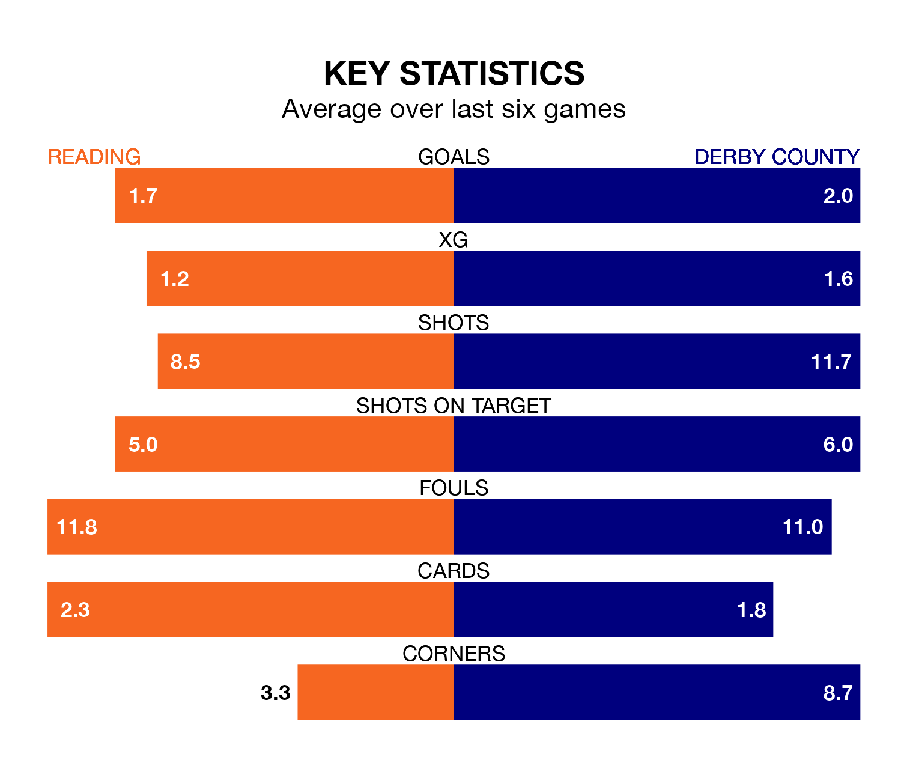

Derby County are strong favourites to take all three points despite Reading's home advantage in Tuesday's late match at the Select Car Leasing Stadium.
*Betting Company* are offering odds of 1.67 on Derby sealing the win, with the visitors sitting third in EFL League One table.
Reading, who are 20th in the league and 26 points behind the Rams, are priced at 4.87 to win. A draw is set at 3.7.
With 50 goals in 27 games so far this season, Derby are the league's joint-second-highest scorers with 1.9 goals per game. And they are conceding fewer than average, letting in 26 goals at a rate of 1.0 per game.
Reading, meanwhile, are average scorers, with 1.3 goals per game. They have conceded 1.6 goals per game.
In the last 10 years, Reading and Derby have played each other on 19 occasions. Reading won six of them, Derby eight, and they drew five times.
On average, the Royals scored 1.5 goals and the Rams 1.4 in those matches.
Their last meeting was on January 3 2022, when they played out a 2-2 draw.
County's Nathaniel Mendez-Laing is the league's most creative player, racking up eight assists in 27 appearances so far this season.
For the Royals, Femi Azeez has set up the most goals, having laid on six assists in 26 games.
The home team are in mixed form in EFL League One, with two wins and three draws from their last six games.
With four wins and a draw over that period, the Rams' form is better – they have taken 13 points from 18, compared to Reading's nine.
Reading's last match was on Saturday, a 1-0 loss against Wigan Athletic.
Derby drew 0-0 with Lincoln City last time out, also on Saturday.
Tuesday's match will be refereed by Darren Drysdale, who has taken charge of eight EFL League One games so far this season, issuing one red card and booking 35 players. He has awarded two penalties.
The last Reading game Drysdale refereed was a 1-0 away loss to Cambridge United on September 4. He is yet to oversee a match featuring Derby this season.
Updated: 09:18 (UTC), 23/01/24